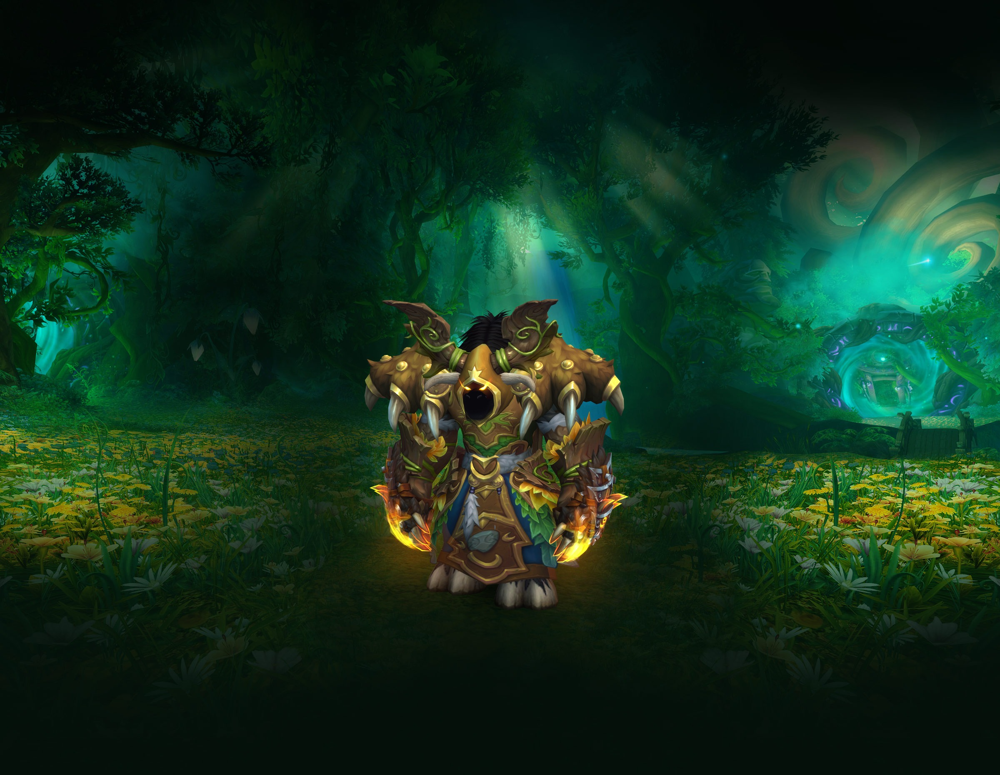
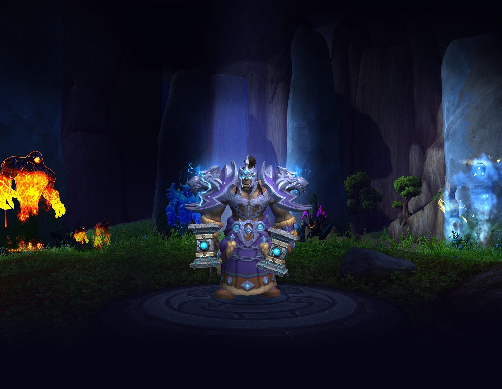

Warrior

For as long as war has raged, heroes from every race have aimed to master the art of battle. Warriors combine strength, leadership, and a vast knowledge of arms and armor to wreak havoc in glorious combat. Some protect from the front lines with shields, locking down enemies while allies support the warrior from behind with spell and bow. Others forgo the shield and unleash their rage at the closest threat with a variety of deadly weapons.
Specializations
- Arms
- Fury
- Protection
Druid
Druids harness the vast powers of nature to preserve balance and protect life. With experience, druids can unleash nature’s raw energy against their enemies, raining celestial fury on them from a great distance, binding them with enchanted vines, or ensnaring them in unrelenting cyclones.
Specializations
- Balance
- Feral
- Guardian
- Restoration
Shaman
Shaman are spiritual guides and practitioners, not of the divine, but of the very elements. Unlike some other mystics, shaman commune with forces that are not strictly benevolent. The elements are chaotic, and left to their own devices, they rage against one another in unending primal fury. It is the call of the shaman to bring balance to this chaos. Acting as moderators among earth, fire, water, and air, shaman summon totems that focus the elements to support the shaman’s allies or punish those who threaten them.
Specializations
- Elemental
- Enhancement
- Restoration
Mage

Students gifted with a keen intellect and unwavering discipline may walk the path of the mage. The arcane magic available to magi is both great and dangerous, and thus is revealed only to the most devoted practitioners. To avoid interference with their spellcasting, magi wear only cloth armor, but arcane shields and enchantments give them additional protection. To keep enemies at bay, magi can summon bursts of fire to incinerate distant targets and cause entire areas to erupt, setting groups of foes ablaze.
Specializations
- Arcane
- Fire
- Frost
Paladin

This is the call of the paladin: to protect the weak, to bring justice to the unjust, and to vanquish evil from the darkest corners of the world. These holy warriors are equipped with plate armor so they can confront the toughest of foes, and the blessing of the Light allows them to heal wounds and, in some cases, even restore life to the dead.
Specializations
- Holy
- Protection
- Retribution
Warlock

In the face of demonic power, most heroes see death. Warlocks see only opportunity. Dominance is their aim, and they have found a path to it in the dark arts. These voracious spellcasters summon demonic minions to fight beside them. At first, they command only the service of imps, but as a warlock’s knowledge grows, seductive succubi, loyal voidwalkers, and horrific felhunters join the dark sorcerer’s ranks to wreak havoc on anyone who stands in their master’s way.
Specializations
- Affliction
- Demonology
- Destruction
More Info
This is a placeholder section further down the page.